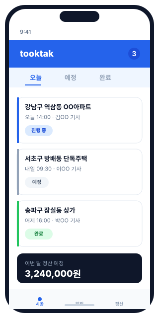

시공 현장을 더 가볍게,
tooktak
시공 기사와 인테리어 업체를 위한 현장 관리 PWA.
카톡·전화·수기장부 대신, 한 화면에서 모든 시공 건을 관리하세요.

누구를 위한 앱인가요?
시공 현장에서 일하는 모두를 위해 만들었습니다.
시공 기사님
- 오늘 할 일과 다음 일정이 한 화면에
- 도면·메모·완료 사진을 현장에서 바로 첨부
- 정산 받을 금액을 시공 건별로 자동 추적
인테리어 업체
- 여러 기사의 일정과 진행 상태를 한눈에
- 시공 배정·거절·완료를 푸시 알림으로 즉시 파악
- 월별 시공 건과 정산을 깔끔하게 정리
핵심 기능
현장에서 진짜 필요한 것만 담았습니다.
시공 건 관리
등록·배정·진행·완료까지, 시공 건의 모든 단계를 한 화면에서 관리합니다.
푸시 알림
새 배정·일정 변경·완료 확인을 실시간 푸시로. 카톡을 일일이 확인할 필요 없습니다.
정산 추적
시공 건별 단가·정산 상태를 자동 집계. 월말마다 수기로 정리할 필요 없습니다.
모바일 최적화
현장에서 한 손으로. 설치 없이 브라우저에서 바로, 홈 화면에 추가하면 앱처럼.
기존 방식 vs tooktak
흩어진 정보가 한 화면으로 모입니다.
기존 — 카톡·전화·수기장부
- 카톡방마다 흩어진 도면과 일정
- 전화로 일정 확인, 받지 못하면 누락
- 월말마다 영수증·수첩으로 정산 재계산
- "누가 어디 갔는지" 매번 묻고 확인
tooktak — 한 화면 통합
- 시공 건·도면·메모가 한 곳에
- 일정과 배정 상태가 푸시로 즉시 전달
- 시공 건별 정산이 자동으로 집계
- 기사 위치·진행 상태를 실시간 확인
설치 방법
앱스토어에 없어도 괜찮습니다. 홈 화면에 추가하면 앱처럼 쓸 수 있습니다.
iOS Safari
- Safari 브라우저로 tooktak을 엽니다
- 하단의 공유 아이콘을 누릅니다
- 홈 화면에 추가를 선택합니다
- 이름을 확인하고 추가를 누릅니다
Android Chrome
- Chrome 브라우저로 tooktak을 엽니다
- 주소창 옆 메뉴(⋮)를 누릅니다
- 홈 화면에 추가 또는 앱 설치를 선택합니다
- 이름을 확인하고 추가를 누릅니다
자주 묻는 질문
정말 무료인가요?
네, 현재 tooktak은 무료로 제공됩니다. 가입과 사용에 별도 비용이 들지 않습니다. 향후 유료 정책이 도입될 경우 사전에 안내드립니다.
앱스토어 / 플레이스토어에서 받을 수 있나요?
tooktak은 PWA(웹앱)로, 별도 앱스토어 설치 없이 브라우저에서 바로 사용할 수 있습니다. 위 "설치 방법"을 따라 홈 화면에 추가하면 일반 앱처럼 쓸 수 있습니다.
어떤 기기에서 쓸 수 있나요?
iOS Safari, Android Chrome, 데스크톱 브라우저(Chrome, Edge, Safari 등) 최신 버전에서 정상 동작합니다. 현장에서는 모바일 사용을 권장합니다.
가입은 어떻게 하나요?
"지금 무료로 시작하기" 버튼을 누르면 가입 화면으로 이동합니다. 시공 기사/업체 구분을 선택하고 기본 정보를 입력하면 바로 사용할 수 있습니다.
데이터는 안전하게 보관되나요?
모든 데이터는 암호화된 통신으로 전송되며, 안전한 클라우드 인프라(Firebase)에 저장됩니다. 자세한 내용은 개인정보처리방침을 확인해 주세요.